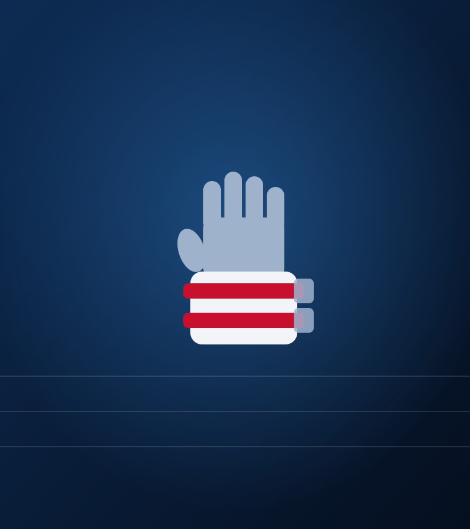

La tienda
Ubicación y horarios
Estamos en Madrid, a pie de pista. Pasa a probar el peso de una bola, medir tu mano para la perforación o recoger un pedido online.
Dirección
XTM Bowling — Pro ShopCalle de Bravo Murillo 123, local 4
28020 Madrid, España
Horario
| Lunes | 11:00 – 21:00 |
|---|---|
| Martes | 11:00 – 21:00 |
| Miércoles | 11:00 – 21:00 |
| Jueves | 11:00 – 22:00 |
| Viernes | 11:00 – 22:00 |
| Sábado | 10:00 – 20:00 |
| Domingo | Cerrado |
Contacto
- Teléfono: 91 123 45 67
- WhatsApp: 600 123 456
- Correo: hola@xtmbowling.es
Cómo llegar
- Metro: Alvarado (L1) a 3 min · Cuatro Caminos (L1, L2, L6) a 8 min
- Autobús: líneas 3, 42, 124 y 127
- Cercanías: Nuevos Ministerios a 12 min andando
- Coche: aparcamiento público en la misma calle; zona SER verde en superficie
Antes de venir
Trae tu bola y tu mano
Para una perforación completa reserva 45 minutos. Si vas a cambiar insertos o ajustar el pulgar, con 15 minutos basta. Si quieres probar zapatos, dinos tu talla por WhatsApp y los dejamos preparados.
Ver servicios del taller